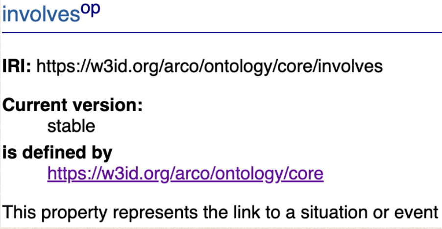

This project starts with two general queries to help identify the main topic: Frederick II.
PREFIX arco: <https://w3id.org/arco/ontology/arco/>
PREFIX rdfs: <http://www.w3.org/2000/01/rdf-schema#>
ASK
WHERE {
?person rdfs:label "Federico II di Svevia" .
}
The prefixes are shorthand to make queries easier to read and write. More specifically, the rdfs prefix is used to refer to properties from the RDF Schema vocabulary.
The ASK keyword indicates that the query returns "True" or "False" values, rather than actual data: it checks whether a condition exists in the dataset.
The query checks whether any entity (?person) exists in the dataset that has an rdfs:label of "Federico II di Svevia".
PREFIX arco: <https://w3id.org/arco/ontology/arco/>
PREFIX rdfs: <http://www.w3.org/2000/01/rdf-schema#>
SELECT ?s
WHERE {
?s rdfs:label "Federico II di Svevia" .
}
The SELECT keyword specifies which variables to return in the query results. ?s is a variable that in RDF triples represents the subject. The WHERE clause contains the pattern that the query will search for in the RDF data.
The query searches the RDF dataset for any resource (?s) that has an rdfs:label with the exact value "Federico II di Svevia".
The Agent “Federico II di Svevia” is not associated with any depiction. Therefore, a SPARQL query is used to research visual documentation about the Emperor:
PREFIX arco: <https://w3id.org/arco/ontology/arco/> PREFIX a-cd: <https://w3id.org/arco/ontology/context-description/> PREFIX agent: <https://w3id.org/arco/resource/Agent/> PREFIX rdfs: <http://www.w3.org/2000/01/rdf-schema#>
SELECT DISTINCT ?cp
WHERE {
?cp a arco:HistoricOrArtisticProperty ;
rdfs:label ?l .
FILTER(REGEX(?l, "Ritratto di Federico II di Svevia","i")) }
The query begins by defining several prefixes that make the query more readable. The arco: prefix is used for referencing the ARCO ontology, which focuses on cultural heritage information. The a-cd: prefix relates to the ARCO Context Description ontology, which provides additional context about the entities. The agent: prefix refers to agents within the ARCO data, while the rdfs: prefix is standard for RDF Schema properties.
The core of the query is the SELECT DISTINCT ?cp statement, which instructs the query to return unique results for the variable ?cp. This variable represents the resources that the query is interested in.
The WHERE clause specifies the conditions for the query. It searches for entities (?cp) that are categorized as arco:HistoricOrArtisticProperty, meaning they are considered significant historic or artistic properties.
The use of the FILTER function with REGEX ensures that the search is case-insensitive and matches any variations of the specified phrase.
The main class for this project is the Architectural or Landscape Heritage class. Therefore, queries were built to investigate whether "castello" exists as an asset in this class, and if the stile of Frederick's castles is listed in the dataset.
1
SELECT DISTINCT ?type
WHERE {
?cp a arco:ArchitecturalOrLandscapeHeritage ; dc:type ?type .
}
Emperor Frederick II left evidence of himself mainly in the castles. The “castello” asset is found among the entities existing in th KG, and therefore chosen as element of interest.
2
SELECT DISTINCT ?type
WHERE {
?cp a arco:ArchitecturalOrLandscapeHeritage ; dc:type ?type . FILTER(CONTAINS(LCASE(?type), "castello"))
}
Since it is the most widespread architectural style in the Frederician era, the Swabian castle, “castello-svevo”, represents the core topic of the research.
3
PREFIX arco: <https://w3id.org/arco/ontology/arco/> PREFIX dc: <http://purl.org/dc/elements/1.1/> PREFIX rdfs: <http://www.w3.org/2000/01/rdf-schema#> SELECT ?type (COUNT(?cp) AS ?count) WHERE {
?cp a arco:ArchitecturalOrLandscapeHeritage ; dc:type ?type .
FILTER(CONTAINS(LCASE(?type), "castello")) }
GROUP BY ?type ORDER BY DESC(?count)
Through this research, only two Swabian castles appear in the ArCo ontology.
The following query is necessary to search for the Swabian castles located in the two regions of interest: Sicily and Apulia.
4
SELECT (COUNT(?cp) AS ?numeroCastelli) ?regionId (COUNT(?regionId) AS ?regionCount)
WHERE
{
?cp a arco:ArchitecturalOrLandscapeHeritage ;
dc:type ?o ;
arco:regionIdentifier ?regionId .
FILTER(str(?o) = "castello-svevo")
}
GROUP BY ?regionId
Surprisingly, the results of the query reveal that the two Swabian castles in Italy are grouped by two region IDs, “16” and “19”, respectively Apulia and Sicily.
The next query is created to retrieve the two cultural properties' IRIs.
SELECT DISTINCT ?cp ?label ?regionId
WHERE {
{
?cp a arco:ArchitecturalOrLandscapeHeritage ;
dc:type ?type ;
rdfs:label ?label ;
arco:regionIdentifier ?regionId .
FILTER(str(?type) = 'castello-svevo' && str(?regionId) = '16')
}
UNION
{
?cp a arco:ArchitecturalOrLandscapeHeritage ;
dc:type ?type ;
rdfs:label ?label ;
arco:regionIdentifier ?regionId .
FILTER(str(?type) = 'castello-svevo' && str(?regionId) = '19')
}
}
ORDER BY ?regionId
The core of the query involves selecting distinct instances (?cp) of heritage sites that are classified as ArchitecturalOrLandscapeHeritage according to the arco ontology. For these instances, the query retrieves the label (?label) and the region identifier (?regionId). The query applies a filter to find only those heritage sites that have a type (?type) matching "castello-svevo" and are located in regions with identifiers '16' or '19'. These regions correspond to specific areas in Italy, likely Apulia (Puglia) and Sicily. The UNION clause is used to combine the results from both regions, and the final results are ordered by the region identifier. This way, the query returns a list of "castello-svevo" heritage sites, sorted by their region, from the specified regions.
In view of the fact that there are many more Swabian castles in Italy than the two reported in ArCo, the LLM Chat GPT is exploited to research for all the Swabian castles built in Southern Italy, more specifically in Sicily and Apulia, beating heart of Frederick’s reign.
Zero-shot prompting involves asking a language model to perform a task without prior examples or specific training for that task. The model relies on its existing knowledge to generate a response. This approach allows the model to generalize and handle new tasks without needing extensive data or fine-tuning.
The results show numerous others than listed in the ArCo ontology. Consequently, attempts will be made to establish whether these castles exist in the ontology, or if they are listed under a different dc:type.
A few attempts are made to retrieve other castles, by querying through the FILTER(REGEX) option and the name of the castles.
Many of them do not show results, e.g.
PREFIX arco: <https://w3id.org/arco/ontology/arco/>
PREFIX rdfs: <http://www.w3.org/2000/01/rdf-schema#>
SELECT DISTINCT ?cp ?label
WHERE {
?cp a arco:ArchitecturalOrLandscapeHeritage ;
rdfs:label ?label .
FILTER(REGEX(?label, "Castello di Brindisi", "i"))
}
ChatGPT is asked to find other names the castles can be listed under, thorugh the Few-shot prompting technique:
Few-shot prompting is a technique where a language model is given a few examples of a task or query to help it understand and generate relevant responses. By providing one to ten examples, the model learns the format or nature of the task and uses this context to handle new, similar inputs.
By modifying the FILTER(REGEX) of the previous queries, it is aimed to retrieve the Brindisi Castle, also known as “Castello di Terra”:
6
PREFIX arco: <https://w3id.org/arco/ontology/arco/>
PREFIX rdfs: <http://www.w3.org/2000/01/rdf-schema#>
SELECT DISTINCT ?cp ?label
WHERE {
?cp a arco:ArchitecturalOrLandscapeHeritage ;
rdfs:label ?label .
FILTER(REGEX(?label, "Castello di Terra", "i"))
The caste is not recognized as a Swabian castle. Some improvements are therefore suggested:
Enrichments
Through the project, it is now attempted to enrich the ArCo KG with new triples.
The Brindsi Castle is not associated with the Layout class. Two different LLMs (Gemini and ChatGPT) are therefore used to inquire what plan the castle presents.
ChatGPT submits a partially incorrect piece of information, while Gemini provides a faithful answer, supported by the attached planimetry.
In order to retrieve the “trapezoidale” asset in the Layout class of the construction-description ontology, the following query is built:
The SELECT ?layout specifies that the query will return the ?layout variable, which represents the resources being queried. In the WHERE clause, the ?layout rdf:type arco:Layout condition filters for resources that are of type arco:Layout. Finally, the FILTER(CONTAINS(STR(?layout), "trapezoidale")) restricts the results to only those layouts whose URIs contain the word "trapezoidale".
The LLama LLM is now employed through zero-shot prompting technique in order to establish the main construction elements of the Augusta Castle, the main focus of this segment. Results indicate the “tower” as the first listed element.
In order to associate the latter to the Castle, two properties are selected, namely a-con:hasConstructionElement and a-con:isConstructionElementOf. Therefore a new query is built in order to retrieve the “tower” asset in the Construction Element class.
This SPARQL query selects assets that are construction elements along with their corresponding labels. It searches for labels containing the word "torre," regardless of case. The query returns the matching assets and their associated labels.
The three chosen Castles in the Arco KG are not yet correlated with their commissioner, Frederick II.
Employing the Multimodal Chain-of-Thought technique, ChatGPT is involved with the aim of identifying the common commissioner.
A review of the Context-description ontology identifies two object properties, that are a-cd:isCommittentIn and a-cd:hasCommittent, useful to link the three Architectural Heritage entities with their Agent in new sets of triples.
6yh and 7th Triple
To discover the potential cultural events within the ArCo KG, a SPARQL query is constructed to search for assets belonging to the class EventOrSituationInTime, that can eventually be associated with the architectural entities.
This SPARQL query retrieves information about events or situations in time. Specifically, it selects events that are classified as EventOrSituationInTime and optionally includes their labels and descriptions if they are available. The query returns the event along with its corresponding label and description, if present.
The results identify "visita del castello" as one of the existing entities.
To determine if a (guided) visit can be classified as a cultural event specific to a castle, three different LLMs, namely ChatGPT, LLama and Gemini, are used for verification.
The response from Gemini is initially negative. However, when asked for an explanation, the LLM revises its assessment and confirms that the visit can indeed be considered a potential event associated with the castle.
Once confirmed, the 3 LLMs are now employed to verify whether the (guided) visit specifically pertains to Castel Del Monte. The responses are consistent, particularly in listing order: all of them place the "tour of the castle" in the first position.
A research to find the most suitable property of the ArCo core ontology, in order to connect the castle to the event, is made. The results can be found in the Core Ontology:

Combining the obtained pieces of information, two new triples are constructed in order to associate Castel Del Monte with its main activity and vice versa.